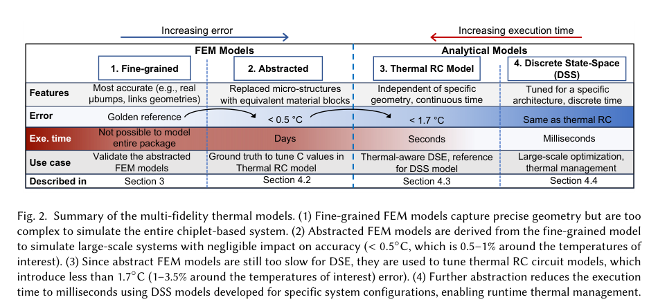
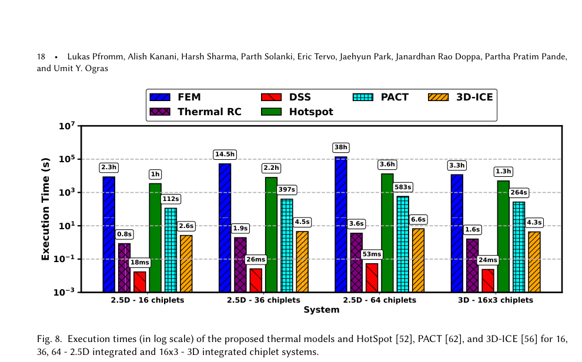

本报告由大模型自动生成，可能存在理解、归纳或数据转述错误；请以原论文为准。 MFIT : Multi-FIdelity Thermal Modeling for 2.5D and 3D Multi-Chiplet ArchitecturesLukas Pfromm, Alish Kanani, Harsh Sharma, Parth Solanki, Eric J. Tervo, Jaehyun Park, Janardhan Rao Doppa, Partha Pratim Pande, Umit Yusuf Ogras · ACM Transactions on Design Automation of Electronic Systems · 2025 · 原文 · PDF 图表提取提示：报告提到的 Figure 11, Table 9 未能自动裁出；请查看原论文 PDF。 报告模型：gemini-3.1-pro-preview / high 这篇文章介绍了一种名为 MFIT (Multi-FIdelity Thermal Modeling) 的多保真度热建模框架，专门用于 2.5D 和 3D 多芯粒（Multi-Chiplet）架构。为了让你清晰地理解整篇文章的脉络，我们将按照问题背景、核心方法（模型推导与抽象）、实验验证的顺序进行逻辑连贯的详细解析。 1. 问题背景与系统全貌随着人工智能（AI）和机器学习（ML）对算力和内存需求的激增，传统的单块 2D 芯片（Monolithic 2D chip）由于面积增大导致制造良率低、成本高，已逼近物理极限。为此，工业界转向了 2.5D 和 3D 芯粒（Chiplet）集成技术。
面临的挑战（Why it is a problem）： 这种密集的排列使得系统的计算密度极大，导致封装级的功率密度远超传统 2D 芯片。热量不仅要在中介层中横向传播，还要在堆叠的芯粒间纵向传播，加上互连导线产生的焦耳热，引发了严重的热管理危机。 在芯片设计的不同阶段（从早期的架构探索到硅后运行时的动态管理），对热仿真工具的速度和精度要求截然不同。现有的热建模工具存在两极分化：
作者的解决方案： 作者提出了 MFIT 框架，构建了一套包含四种不同保真度（精度与速度权衡）的模型族（参考原文图 2）：精细 FEM 模型（作为黄金基准）、抽象 FEM 模型（用于整片级验证）、热 RC 模型（支持非均匀网格和各向异性，用于架构探索），以及离散状态空间（DSS）模型（毫秒级极速求解，用于运行时管理）。这套模型在物理上是一脉相承的，确保了设计周期各阶段结果的一致性。  2. 精细与抽象有限元模型 (FEM Modeling)文章首先从最底层的物理方程出发。FEM 分析通过将连续的几何体划分为离散的网格（Mesh），求解固体热传导的偏微分方程： 在这个首次出现的公式中，各符号定义如下：（原文未定义/未说明）； 是热导率（thermal conductivity，单位：原文未说明）； 是温度（temperature，单位：原文未说明）； 是热生成率（heat generation rate，单位：原文未说明）； 是密度（density，单位：原文未说明）； 是体积比热（volumetric specific heat，单位：原文未说明）； 是时间（单位：原文未说明）。 由于 2.5D/3D 封装中包含成千上万个微米级的 -bumps 和互连线，直接用上述方程对整个封装进行 FEM 求解会耗尽计算内存并花费数天时间。因此，作者的第一步是将复杂的微观结构抽象为均匀的等效材料块（Abstracted Models）。 作者选取包含 -bump（或 TSV）和底部填充胶（Underfill）的局部精细区域进行孤立的 FEM 仿真，施加静态热流和对流边界条件，测量其上下表面的温度差，然后利用傅里叶定律计算等效热导率 （此处 复用了上一公式的符号，但含义变为沿特定方向的有效热导率）： 其中， 是热导率（单位：原文未说明）； 是热流率（heat flow rate，单位：原文未说明）； 是材料的厚度（thickness of the material，单位：原文未说明）； 是横截面积（cross-sectional area，单位：原文未说明）； 是材料两端的温度差（temperature difference across the material，单位：原文未说明）。 得到等效的 、热容和比热后，作者在系统级 FEM 模型中用一个简单的长方体替换掉成千上万的 -bump。针对互连线（Links），作者经过同样的局部仿真对比发现，完全移除互连线模型带来的误差仅有约 0.34（瞬态误差更小），但能极大地节省仿真时间。基于此项工程权衡，作者决定在全系统仿真中忽略互连线。此外，作者还用等效的**热传递系数（HTC, Heat Transfer Coefficient）**替代了散热器的流体动力学建模，避免了复杂的 CFD 仿真。 3. 从 FEM 到热阻容 (Thermal RC) 模型抽象 FEM 虽然快了（数天降至数十小时），但对架构探索（DSE）依然太慢。为此，作者将封装的几何和材料属性映射为等效的热阻容（Thermal RC）电路网络。 这是架构与 EDA 跨层协同的核心接口。微架构模拟器（如 NeuroSim 计算功耗，BookSim 评估网络互连功耗）输出的各个 Tile 的动态功率轨迹（Power Traces），将作为输入传递到热 RC 模型中；而热 RC 模型计算出的节点温度，则反馈给架构层以提供动态热与功耗管理（DTPM）决策信息（注：此处存在从连续物理空间到离散节点网络的信息损失，且未对互连线进行显式建模）。 在空间离散化上，MFIT 极具灵活性：它将封装自底向上切分为多个层。对于性质单一的层，采用均匀的 2D 网格；对于包含不同芯粒和材料的层，采用非均匀网格（Non-uniform grid）。为了保证架构评估的精度，有芯粒的发热区域网格被划分得很细；而基板、散热盖等非关键区域网格较粗以节省计算量。 针对许多封装材料（如 C4 凸块层）具有**各向异性（Anisotropic）**的特点，MFIT 允许每个节点在 x, y, z 三个维度的热导率（）不同，并计算各方向的热导（Thermal Conductance）： 这里 分别是层在 x, y, z 轴方向的热导率（单位：原文未说明）； 分别是节点在 x 和 y 维度的长度（单位：原文未说明）； 是层的厚度（单位：原文未说明）； 分别是节点沿 x, y, z 轴的热导（单位：原文未说明）。节点的热容（thermal capacitance）计算为 （ 的单位：原文未说明）。 基于基尔霍夫电流定律，节点 的连续时间常微分方程（ODE）表述为： 其中， 是节点 的热容（单位：原文未说明）； 分别是节点 和 的温度（单位：原文未说明）； 是时间（单位：原文未说明）； 是 RC 和 DSS 模型中的总节点数；求和索引 的取值范围是 到 ； 是相邻节点 和 之间的热导（如果 不相邻则为 0，单位：原文未说明）； 是节点 的热生成（heat generation，单位：原文未说明）。 为了求解整个系统的温度场，作者将其写成矩阵形式： 其中 是 的矩阵，分别代表节点温度、温度导数以及生成热（单位均：原文未说明）。 是 的热容矩阵（单位：原文未说明）。 是 的热导矩阵（单位：原文未说明），其主对角线元素为 ，非对角线元素为 。 关键设计选择与参数整定（Tuning）： 作者指出，传统的 RC 方法在计算稳态温度时很准，但在计算瞬态（随时间剧烈变化）温度时误差较大。这是一个硬件建模常被忽略的痛点。为了解决这个问题，作者在小型测试系统上引入了一个标量乘数，使用 Nelder-Mead 非线性优化算法，以 FEM 的瞬态结果为参考，对 RC 模型中每一层的热容参数进行整定（Tuning）。一旦材料确定，这些整定好的参数就能直接泛化扩展到 64 芯粒的大型系统中，无需重新校准。 在求解器选择上，作者使用向后欧拉法（Backward Euler）处理典型的刚性 ODE，并利用稀疏线性求解器 SuperLU 结合 BLAS 库加速矩阵运算，从而实现了秒级的仿真速度。 4. 离散状态空间 (Discrete State-Space, DSS) 模型为了让运行时管理（如 DTPM 算法）能够实时预测温度，秒级的 RC 模型依然不够快。作者进一步将连续时间的 RC 模型在时间域上进行了离散化，推导出 DSS 模型。 将上述矩阵 ODE 移项整理得到标准状态空间表示： 其中 是维度为 的矩阵（单位：原文未说明）。 定义采样周期（sampling period）为 （单位：原文未说明）。假设在每个时间间隔 内，微架构输入的功耗 保持恒定，作者应用了**零阶保持器（Zero-Order Hold, ZOH）**近似来求解积分。评估 时刻的系统状态： 其中 为积分变量（单位：原文未说明）。通过积分计算，作者定义了维度为 的离散时间系统矩阵 （单位：原文未说明）： 这里 是 的单位矩阵（无量纲）。最终推导出极其简洁的离散时间状态空间方程： 在这个公式中， 表示离散的时间步索引（取值范围：原文未说明）。 优势解析：一旦几何结构和采样周期 固定， 和 就是常数矩阵（由于构建过程自动化，开销仅为一次性毫秒级计算）。运行时的温度预测变成了一次纯粹的矩阵乘积累加（Multiply-accumulate）操作。现代 CPU 的 SIMD 指令对这种操作有极高优化，使得 DSS 模型能在几毫秒内预测全系统的下一时刻温度。 5. 实验评估 (Evaluation)为了验证上述多保真度模型的准确性和速度，作者评估了 3 个不同规模的 2.5D 系统（包含 16、36、64 个芯粒）和 1 个 3D 系统（包含 16x3 个堆叠芯粒）。
执行时间对比（参考原文图 8）： 
精度评估（参考原文表 9）： 作者使用平均绝对误差（MAE）和平均百分比误差来量化模型与 FEM 黄金基准之间的差异。
异构架构建模能力： 为了证明工具的通用性，作者最后对一款工业界复杂的异构芯片 AMD MI300A 进行了建模。该芯片不仅在底层有 I/O 裸片（IOD），上层混叠了 CPU 复合体（CCD）和加速器（XCD），外围还环绕着 HBM 高带宽内存。传统的分析模型无法处理这种非均匀材料、各向异性传热和双面散热的结构。而 MFIT 利用其灵活的非均匀网格（总计分配了 500 个热节点，在发热活跃的 CCD/XCD 区域配置高密度网格），成功生成了不同垂直层级的温度热力图（参考原文图 11）。 总结主线这篇文章始于一个明确的系统级痛点：2.5D/3D 芯粒架构由于其紧凑的空间和极高的算力，导致热管理面临严峻挑战。现有的热仿真工具要么太慢（FEM），要么对这种新型架构的高级物理特性（各向异性、非均匀性）支持不足，导致不准。 为了解决这个问题，作者逐步推导，引出了 MFIT 多保真度模型链：
局限性与警示： 本文的模型高度依赖于初始的参数整定（Tuning）过程。如果封装的材料叠层发生彻底改变，设计者必须重新返回最底层的 FEM 跑基准测试来校准热容标量。此外，正如实验中 WL2/WL3 展现的，面对空间上高度集中、时间上极短暂的瞬态功耗尖峰，RC 和 DSS 模型存在抹平效应，可能漏报瞬时的局部过热（Hotspot）。因此，该工具的结论适用于系统级的平均温度监控和长周期的热管理，但不能过度推广到需要纳秒级热击穿分析的底层物理签核阶段。 |